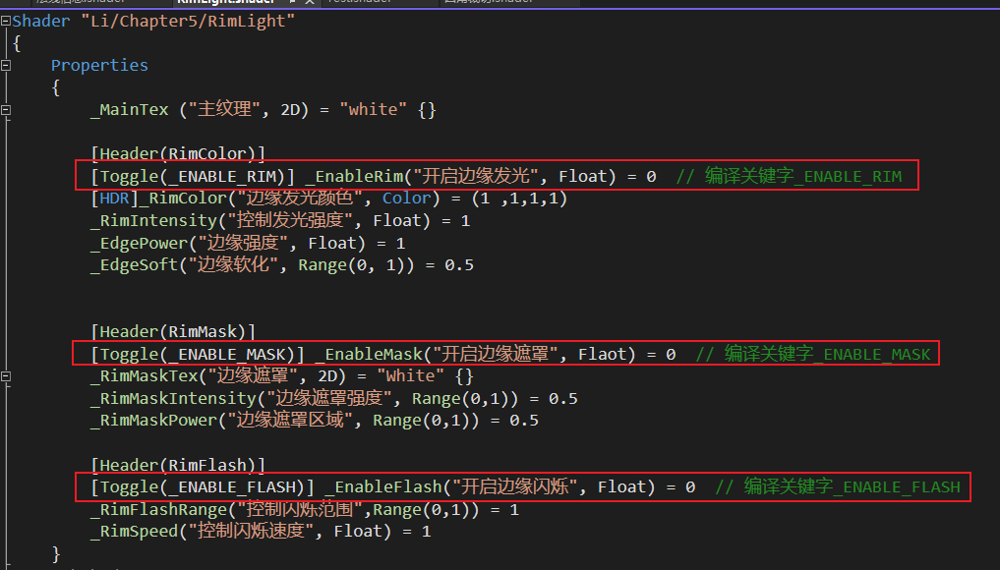
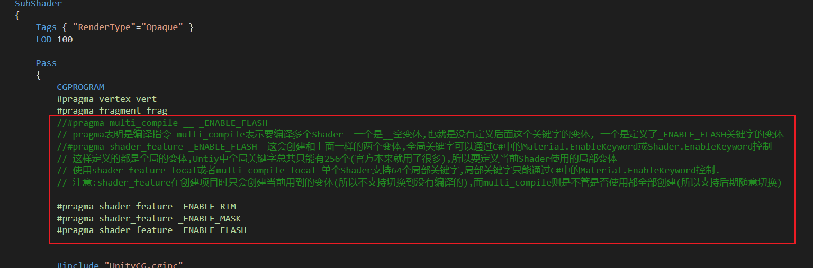
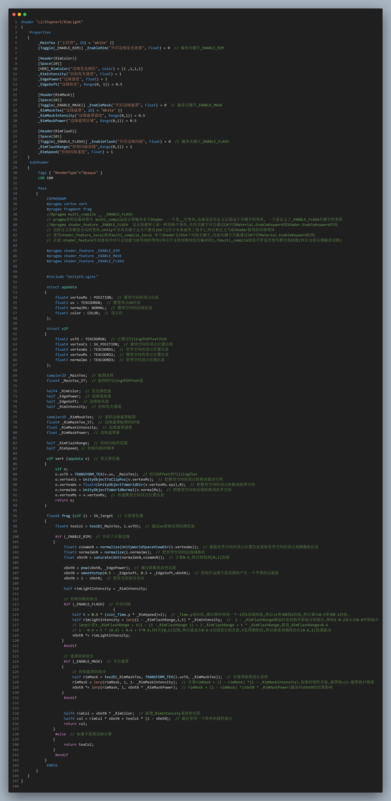
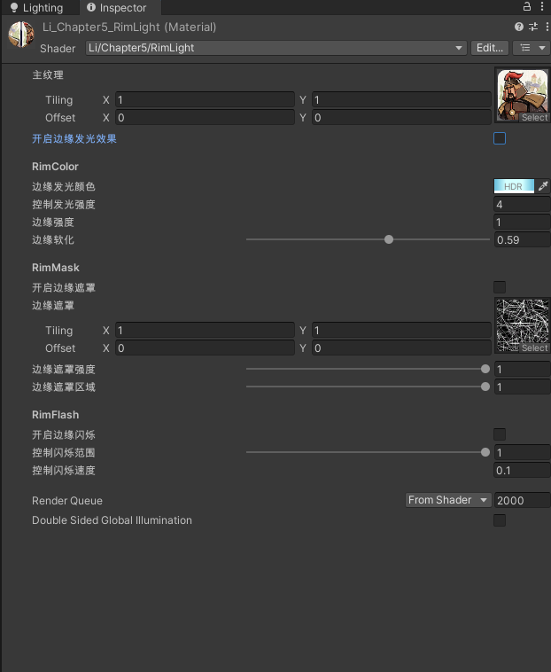

5.1 边缘光效果
5.1.4 让功能是"可选的":Shader变体
在材质中选择Shader中哪些代码块是要运行的,而哪些不运行.最好的办法是让Shader在编译时将那些不需要的代码不编译进去.
在Shader中可以利用关键字Keyword实现这一功能.可以根据材质开启的关键字的不同选择执行不同的Shader变体(注意不同变体的增长是很夸张的2*2*2个关键字就有8个变体了),用空间换时间节省渲染开销.
在Shader中使用multi_compile/shader_feature就可以控制产生Shader变体.
1.声明关键字开关到Inspector面板

2.编译关键字,注意shader_feature和multi_compile的区别

3.完整代码

4.材质球样式
